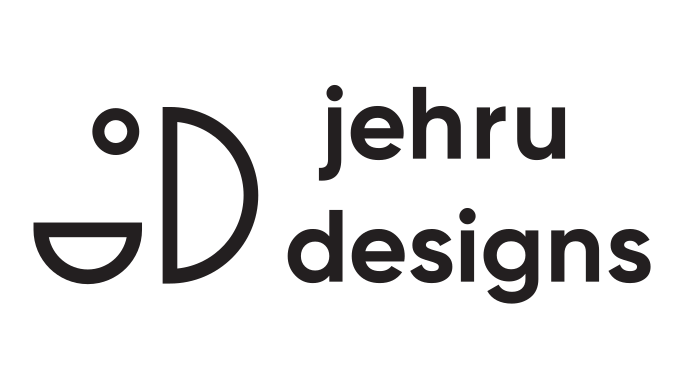

Primary lockup

Download SVG
Brand Guidelines
The logo combines a clean monogram with a straightforward wordmark. It should feel clear, modern, and readable first. Decorative variations are secondary and should only appear when legibility is not at risk.
Inter leads the system with clarity and warmth. Space Mono is used in short, deliberate moments to add a technical edge.
Primary typeface for interface, body copy, and headings.
Display XL
96px
Semibold
H1
72px
Semibold
H2
48px
Bold
H3
36px
Bold
H4
24px
Bold
H5
20px
Bold
H6
18px
Bold
Body Large
18px
Regular
Body
16px
Regular
Body Small
14px
Regular
Accent typeface for labels, emphasis, and short technical callouts.
Regular
400
Aa
Icons should remain simple, geometric, and consistent in stroke weight. The goal is quick recognition, not illustration detail.
#121212
#F5F1EA
#D98463
#5A54B2
#5F7366
#7A5C4D
#6B6560
The voice is direct, warm, and practical. It should communicate confidence without over-promising.
Clear over clever. Useful over performative. Specific over vague.
Informative in documentation, concise in UI, and conversational in social touchpoints.
"Here is the decision, and why it works."
"We are revolutionizing everything forever."
{kind=link}
{kind=link}